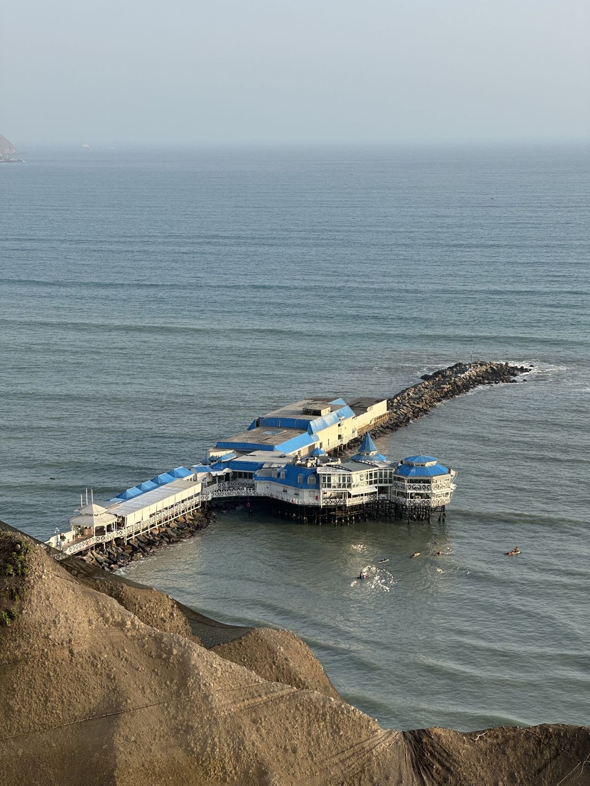
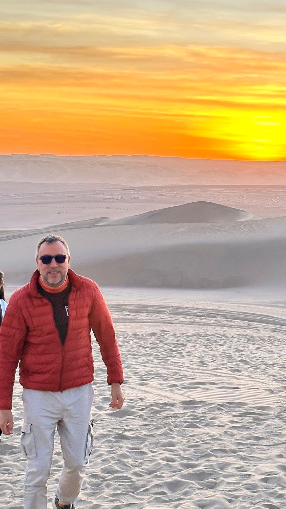
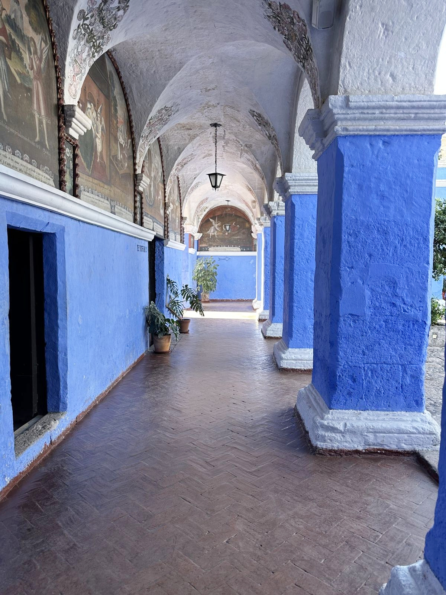
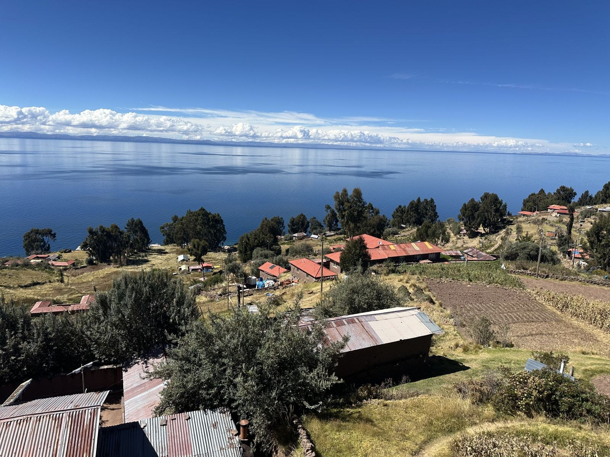
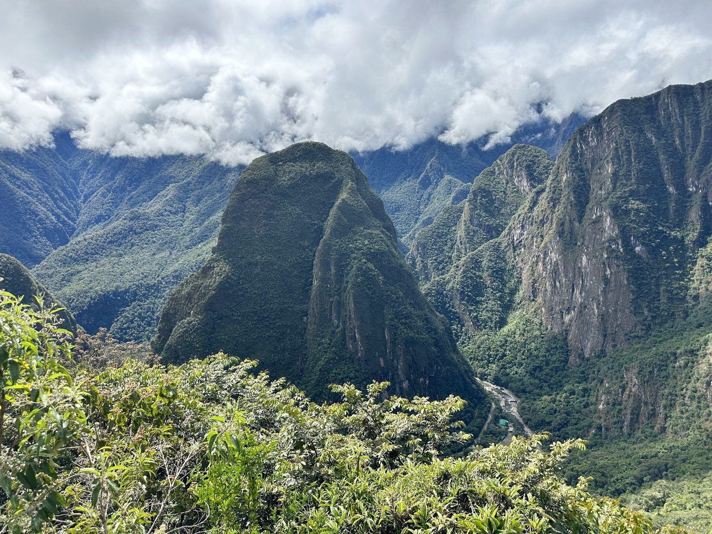
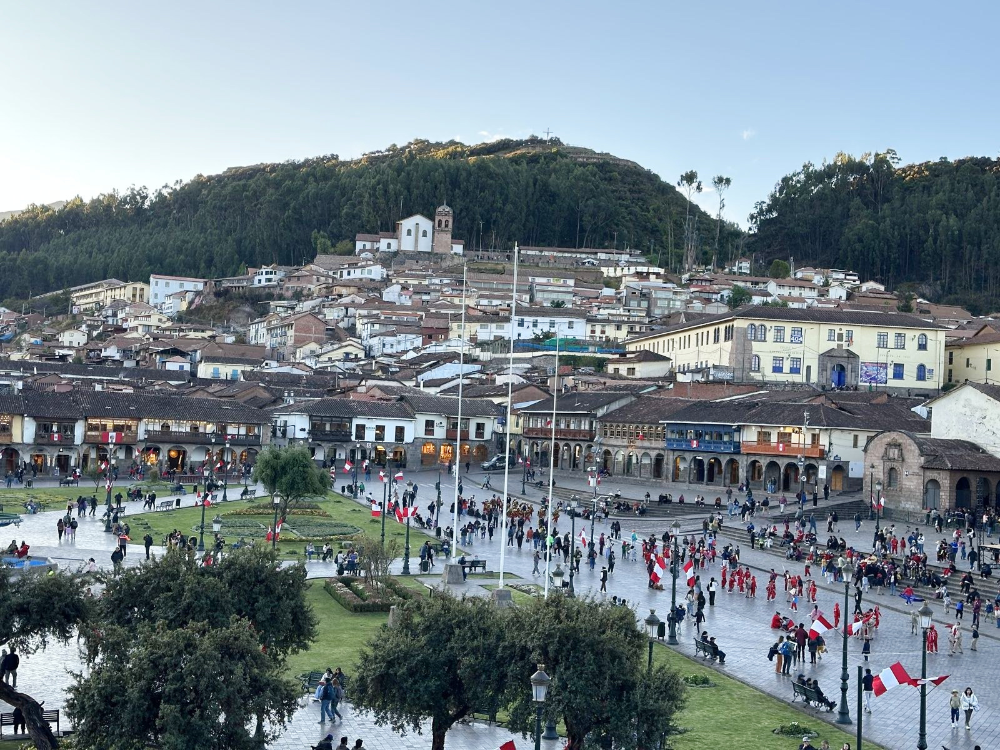

20.06 — 14.07 / 2025
Perú
i Equador
Dels Andes al Pacífic.
Ciutats, deserts, camins inques i illes. Un quadern de fotografies i moments compartits.
Obre el quadern ↓ Machu Picchu / Perú
Machu Picchu / PerúEl viatge, capítol a capítol
10 / 371 fotografies 01
01Quito
↗Quito, les primeres trobades i les vistes des del Panecillo i el mirador dels volcans.
47 fotografies
02Lima
↗Miraflores, el centre històric i Barranco: passejades, arquitectura i els primers sopars al Perú.
25 fotografies
03Paracas i Ica
↗El Pacífic de Paracas, les illes Ballestas, el pisco d’Ica i les dunes de Huacachina.
30 fotografies
04Arequipa i la vall del Colca
↗Els colors de Santa Catalina, el camí entre volcans i la vall del Colca.
36 fotografies
05Llac Titicaca
↗Una jornada al llac Titicaca: les illes flotants dels Uros i l’illa de Taquile.
17 fotografies 06
06Valle Sagrado
↗De camí des de Puno, Raqchi i Andahuaylillas. Després, Ollantaytambo, Chinchero, Maras, Moray i Pisac.
51 fotografies
07Machu Picchu
↗L’arribada a Machu Picchu: els camins de la ciutat inca, les muntanyes que l’envolten i els moments compartits.
41 fotografies
08Cusco
↗Els carrers de Cusco, els seus barris i el temple de Qoricancha.
34 fotografies 09
09Muntanya dels set colors
↗Vinicunca: el camí cap a la muntanya dels set colors i les vistes des del cim, a 5.036 metres.
37 fotografies 10
10Galápagos
↗San Cristóbal i Santa Cruz: busseig, lleons marins, tortugues gegants i els darrers dies del viatge.
53 fotografiesEl viatge al mapa
Els llocs de les fotografies geolocalitzades.